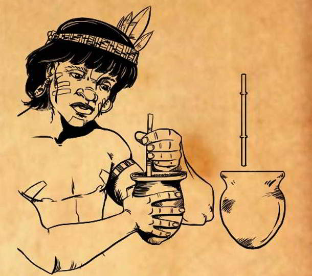

How it was born
Mate has a strong cultural significance for both national identity and society. Yerba Mate is the national drink of Paraguay, where it is also consumed with either hot or ice cold water (called tereré); Argentina; and Uruguay. Drinking mate is a common social practice in all of the territory of Paraguay and parts of Argentina, Brazil, Uruguay, southern Chile, and eastern Bolivia. Throughout the Southern Cone, it is considered to be a tradition taken from the Paraguayan Guaraní and drank by the gauchos or vaqueros, terms commonly used to describe the old residents of the South American pampas, chacos, or Patagonian grasslands, found principally in parts of Argentina, Paraguay, Uruguay, southeastern Bolivia, southern Chile and southern Brazil. A common friendly (and sometimes not so friendly) discussion is about from “where the mate is”, Argentinians will say is their traditional drink and that it was born because of them, Uruguayans and Paraguayans will same the same thing, but the truth is quite different… Mate was first consumed by the indigenous Guaraní who live in what is now Paraguay, southeastern Brazil, Argentina, Bolivia, Uruguay, and was also spread by the Tupí people who lived in neighbouring areas. After, it was commercialised to part of southern Brazil and northeast Argentina, mostly some areas that were Paraguayan territory before the Paraguayan War. Therefore, the scientific name of the yerba-mate is Ilex paraguariensis. The consumption of yerba-mate became widespread with the European colonization in the Spanish colony of Paraguay in the late 16th century, among both Spanish settlers and indigenous Guaraní, who consumed it before the Spanish arrival. Yerba Mate consumption spread in the 17th century to the Río de la Plata and from there to Peru and Chile.